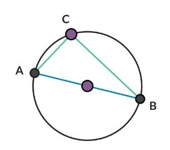

Berikut adalah lingkaran dengan jari-jari 7 cm:
Dari geogebra tersebut:
Bagian dari lingkaran disebut busur lingkaran. Busur yang lebih kecil disebut busur minor (pada gambar berwarna biru) dan bagian yang lebih besar disebut busur mayor (berwarna merah). Jika hanya disebutkan kata busur, maka yang dimaksud adalah busur minor.
Besarnya ∠BAC = a (Titik A adalah pusat lingkaran).
Dalam matematika:
Sudut a disebut sudut pusat yang menghadap pada busur BC.
Sudut pusat adalah sudut yang titik sudutnya terletak pada pusat lingkaran dan kaki-kaki sudutnya adalah jari-jari lingkaran.
Sudut θ disebut sudut keliling yang menghadap pada busur BC.
Sudut keliling adalah sudut yang titik sudutnya terletak pada lingkaran dan kaki-kaki sudutnya berupa tali busur.
Apakah kalian ingat apa yang dimaksud tali busur? Tali busur adalah ruas garis yang menghubungkan dua titik pada lingkaran.
SIFAT-SIFAT sudut pada lingkaran- Tali busur adalah ruas garis yang menghubungkan dua titik pada lingkaran.
- Sudut pusat besarnya dua kali sudut keliling yang menghadap pada busur yang sama.
- Sudut keliling yang menghadap pada diameter lingkaran, adalah sudut siku-siku.


contoh soal:
AB adalah diameter pada lingkaran berikut. Jari-jari lingkaran 8,5 cm dan panjang AC = 8 cm. Tentukan:
-

-
Besar ∠ACB
∠ACB adalah sudut keliling yang menghadap pada diameter AB (atau berdasarkan teorema Thales) maka:∠ACB = ½ × 180°
= 90° -
Panjang AB
AB adalah diameter maka panjang AB = 2 × 8,5 = 17 cm -
Panjang BC
∆ACB adalah segitiga siku-siku, panjang BC dapat dihitung berdasarkan teorema Pythagoras:BC² = AB² - AC²
BC² = 17² - 8² = 152
BC = 15 cm